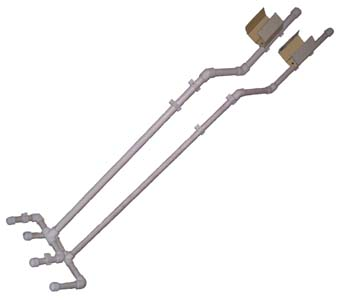
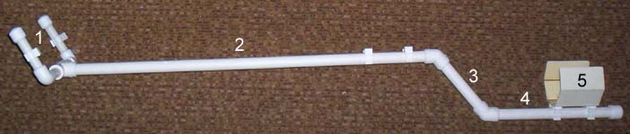

Несущая платформа-штанга пешеходного магнитоиндукторного металлоискателя (металлодетектора)

Назначение
Универсальная штанга, выполняющая роль несущей платформы для установки навесного оборудования, спроектирована в целях исследования и разработки различных схем пешеходных металлоискателей (металлодетекторов) на основе индукторов и детекторов переменного магнитного поля, а также возможной сборки их законченных конструкций.
Конструкция штанги
Внешний вид штанги показан на рис. 1.

Рис. 1. Несущая платформа-штанга пешеходного металлоискателя: 1 - нижняя вилка (диаметр трубок 20 мм, размеры 130 мм на 230 мм), 2 - несущая труба (диаметр 25 мм, длина 800 мм), 3 - рукоятка (диаметр 25 мм, длина 150 мм), 4 - верхняя труба (диаметр 25 мм, длина 300 мм), 5 - предплечевой захват-упор (открытый шестигранник высотой 100 мм, ширина грани 50 мм).
Штанга неразъемной конструкции состоит из пяти узлов: нижней вилки (1) U-образной формы, несущей трубы (2), рукоятки (3), верхней трубы (4), предплечевого захвата-упора (5). Все узлы штанги, кроме предплечевого захвата-упора, собраны из полипропиленовых водопроводных труб диаметром 25 мм (облегченный вариант собран из труб диаметром 20 мм) методом пайки со стандартными соединительными и крепежными элементами. Предплечевой захват-упор изготовлен из листового термопластичного материала с использованием специального технологического приспособления [1] и крепится на верхней трубе зажимами.
Штанга немагнитная, не содержит токопроводящих элементов. Масса не более 650 г, масса облегченного варианта (из труб диаметром 20 мм с меньшей прочностью на изгиб) не более 500 г.
Способ применения
На нижнюю вилку штанги устанавливаются индуктор и детектор металлоискателя, на несущей трубе крепится электронное оборудование и источник питания. Для крепления части оборудования можно использовать также верхнюю трубу. Предплечье укладывается в установленный в удобном положении захват-упор, кисть руки захватывает рукоятку.
Ссылки:
06.11.2010
Альтернативные источники
энергии
Компьютеры и
Интернет
Магнитные поля
Механотронные системы
Перспективные
разработки
Электроника и технология